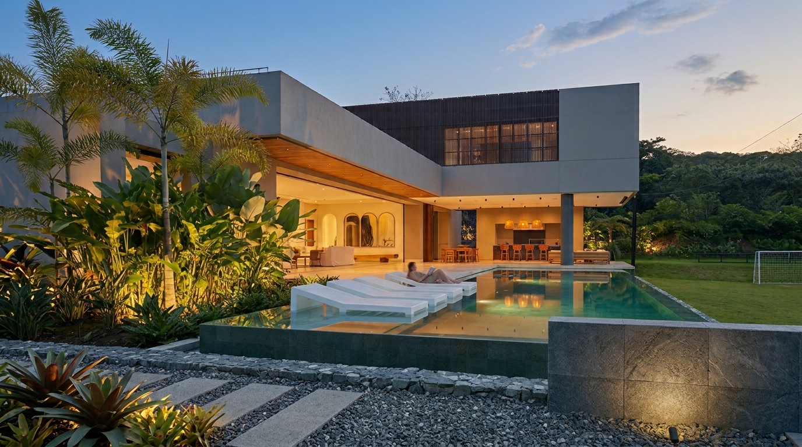
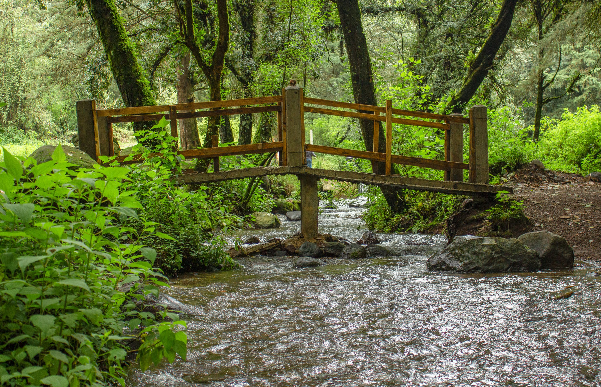
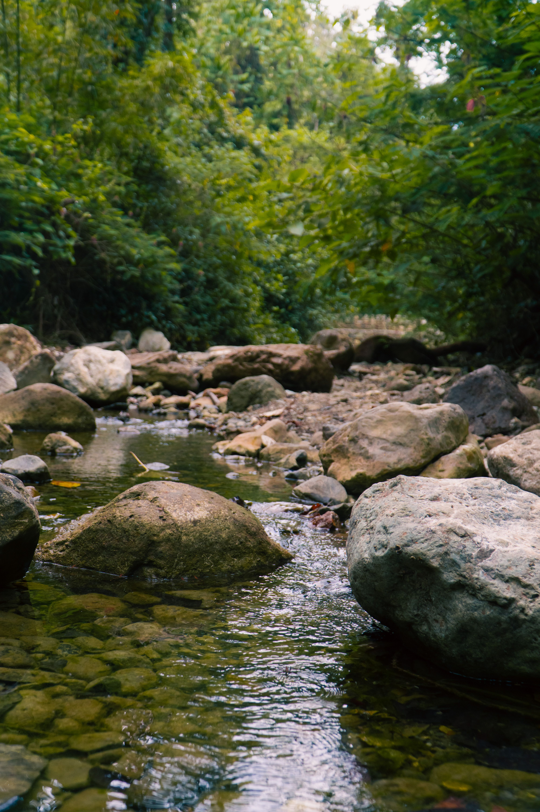
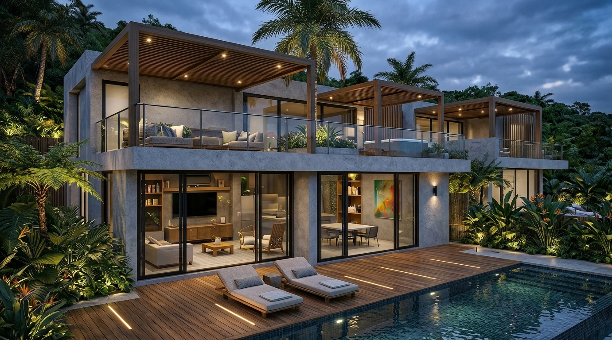
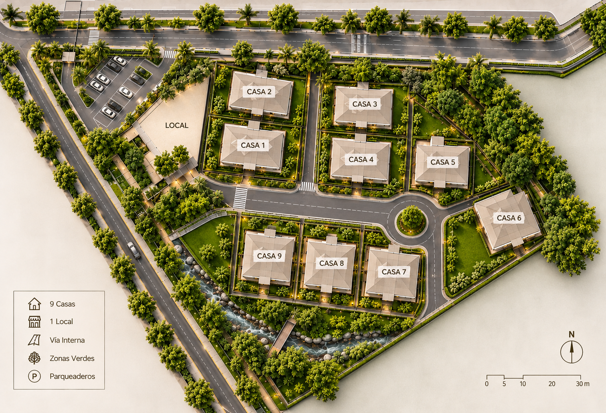
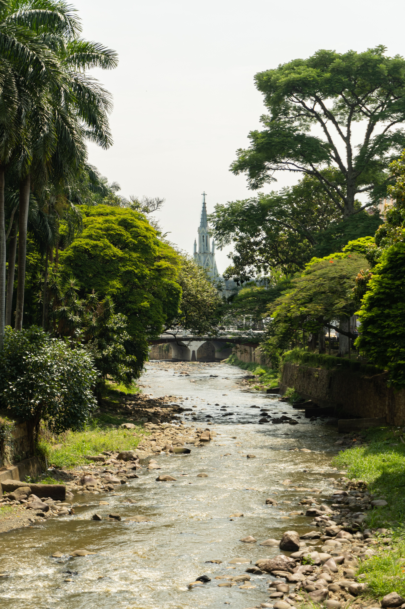

NAYARA
Donde la arquitectura encuentra la naturaleza.
9 residencias exclusivas · Pance, Cali
Donde la arquitectura encuentra la naturaleza.
9 residencias exclusivas · Pance, Cali
NAYARA nace de una visión: crear un conjunto residencial donde la privacidad, la arquitectura contemporánea y el paisaje natural convivan en armonía.
Nueve residencias de aproximadamente 400 m², distribuidas en dos niveles, se integran en un terreno de 7.900 m² en el sur de Cali.

En NAYARA, el paisaje forma parte de la experiencia de habitar. Una quebrada vinculada al río Pance atraviesa el terreno, creando un encuentro entre el agua, la vegetación y la arquitectura.

EL AGUA COMO PARTE DEL PAISAJE
01 / EL ENCUENTRO CON EL AGUAUn lugar para contemplar, respirar y reconectar con lo esencial.
Nueve residencias de aproximadamente 400 m² distribuidas en dos niveles, concebidas para vivir en conexión con la naturaleza.

Una implantación residencial integrada en el paisaje, donde la arquitectura y el entorno natural forman parte de una misma visión.

NAYARA se encuentra en el sector de Pance, al sur de Cali. Un entorno residencial que permite disfrutar de la vida urbana sin renunciar a la tranquilidad del paisaje natural.

Cali, Valle del Cauca, Colombia
Un proyecto que integra arquitectura, paisaje y conexión con la naturaleza.